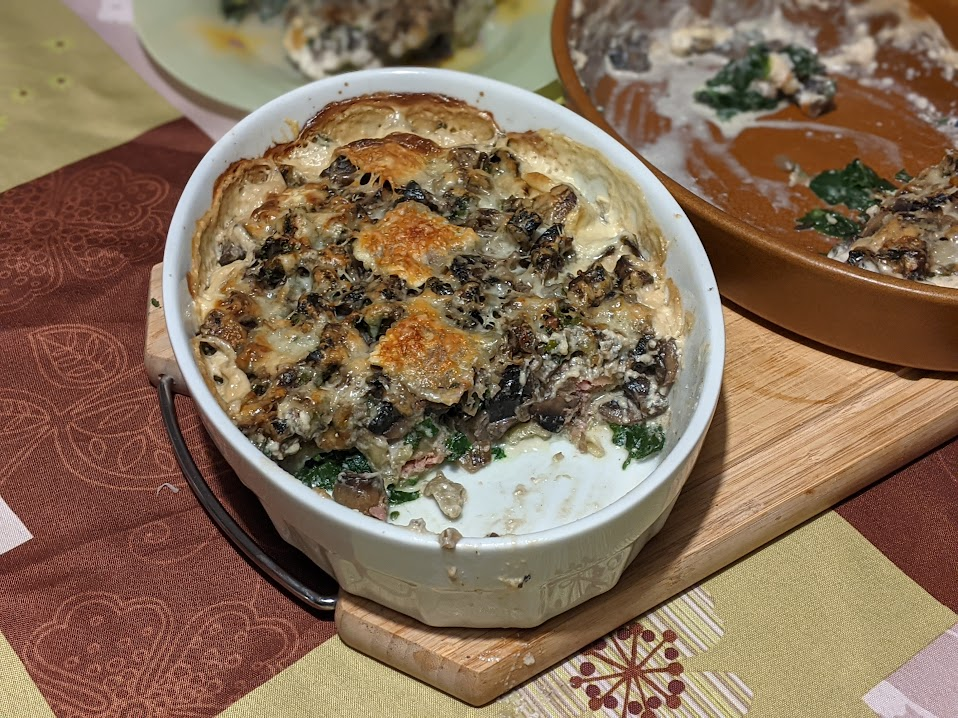

Gratin de raviolis aux champignons

Pour 5 personnes :
- 750g de raviolis frais (ou des ravioles, ça marche aussi)
- 500mL de crème liquide
- 400g de champignons, stylés (pleurotes, shiitake) ou standard (champignons de Paris)
- Un bouquet de persil
- Une gousse d'ail
- Un oignons
- De l'emmental (ou un autre fromage à gratiner)
- Sel, poivre, huile d'olive
- Éplucher et émincer l'oignon et l'ail. Les faire revenir dans une poêle avec de l'huile d'olive.
- Laver les champignons, les couper en bouts grossiers, les ajouter dans la poêle, laisser cuire jusqu'à ce que toute l'eau soit évaporée.
- Laver et ciseler le persil, l'ajouter dans la poêle avec du sel et du poivre. Râper le fromage.
- Faire préchauffer le four à 200°C. Beurrer un moule, mettre dedans les raviolis entremêlés de champignons, recouvrir de crème puis de fromage râpé.
- Faire cuire une bonne demi-heure, servir chaud avec de la salade.
Remarque : j'aime bien utiliser des raviolis fourrés à la courge ou à un autre légume du genre, mais on peut faire un peu ce qu'on veut. Si on fait ça avec des ravioles, c'est plus facile de faire des belles couches dans le plat à gratin.
Retour à la liste des recettes